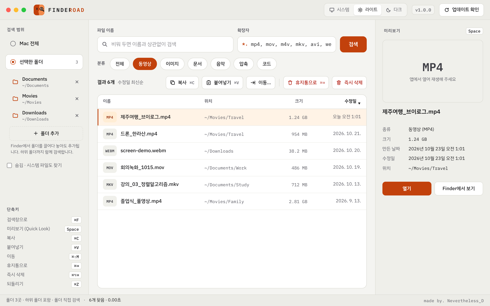

파일 찾기 · 미리보기 · 복사 · 이동 · 삭제를 한 창에서

받은 FINDEROAD.zip 을 더블클릭해서 풀어요.
FINDEROAD.app 을 Finder 왼쪽의 응용 프로그램 폴더로 끌어다 놓아요. 그래야 자동 업데이트가 돼요.
시스템 설정 → 개인정보 보호 및 보안 맨 아래에서 "그래도 열기" 를 눌러요. 다음부터는 바로 열려요.
파일 이름 칸에 이름 일부를 쓰면 바로 찾아요. 띄어 쓰면 모든 낱말이 들어간 파일만 나와요.
확장자 칸만 써도 돼요: mp4 또는 mp4, mov 처럼 쉼표로 여러 개. 두 칸을 함께 쓰면 "이름에 '여행'이 들어간 mp4" 처럼 좁혀져요.
누르면 확장자 칸이 자동으로 채워지고 바로 찾아요. 전체 는 확장자 조건을 비워요.
Mac 전체: macOS 의 Spotlight 로 맥 전체를 빠르게 찾아요.
선택한 폴더: 폴더 추가 를 누르거나 Finder 에서 폴더를 창으로 끌어다 놓으면 여러 폴더를 함께 찾아요. 하위 폴더까지 포함하고, 외장 디스크도 찾을 수 있어요.
표 위쪽의 이름 · 위치 · 크기 · 수정일 을 누르면 정렬이 바뀌어요 (기본: 최근 수정한 순).
점(.)으로 시작하는 숨김 파일이나 라이브러리 폴더까지 찾으려면 왼쪽의 숨김 · 시스템 파일도 찾기 를 켜요.
| 미리보기 | Space | 오른쪽 칸에 이미지 · 동영상 · 음악 · 글이 바로 보여요. Space 를 누르면 Quick Look 으로 크게 봐요. |
| 열기 | Enter | 더블클릭해도 열려요. ⌘R 은 Finder 에서 위치 보기. |
| 복사 | ⌘C | Finder 에서 ⌘V 로 바로 붙여넣을 수도 있어요. |
| 붙여넣기 | ⌘V | 넣을 폴더를 고르는 창이 떠요. Finder 에서 복사한 파일도 붙여넣을 수 있어요. |
| 이동 | ⌘⇧M | 옮길 폴더를 고르면 옮겨져요. |
| 휴지통으로 | ⌘⌫ | 맥의 휴지통으로 옮겨요. 실수했다면 ⌘Z 또는 알림의 '되돌리기'. |
| 즉시 삭제 | ⌘⌥⌫ | 확인 창에서 영구 삭제 를 누르면 휴지통을 거치지 않고 바로 지워요. |
| 되돌리기 | ⌘Z | 바로 앞의 붙여넣기 · 이동 · 휴지통 작업을 되돌려요. |